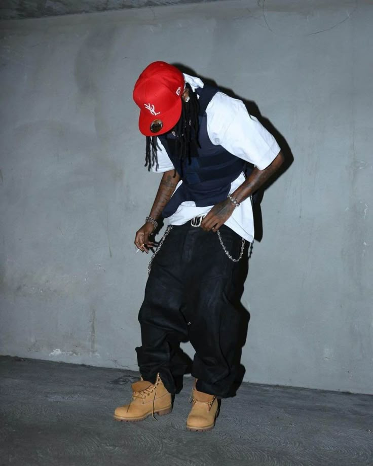
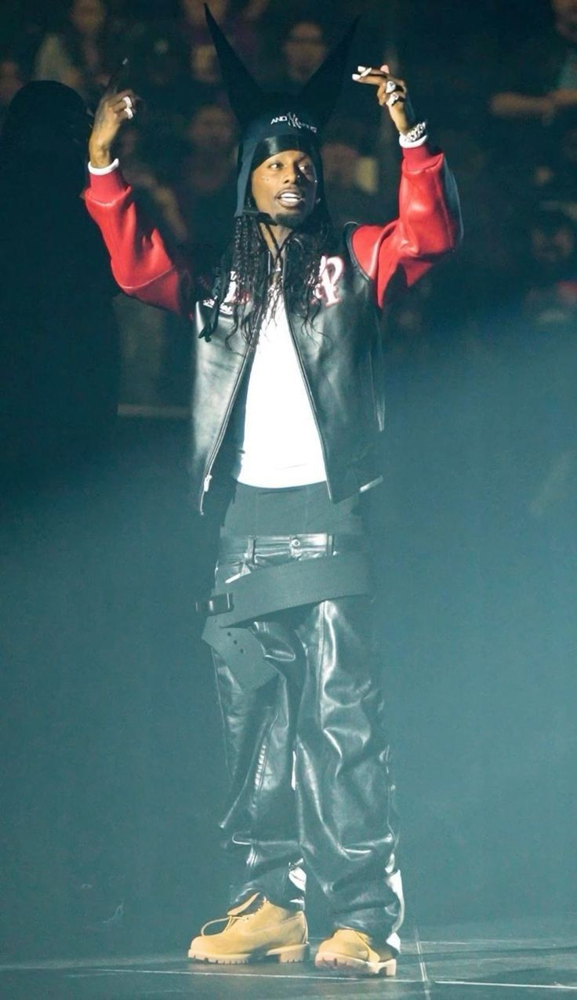

Influencias En El Mundo Del Rap Y La Moda


Playboi Carti no solo cambió la forma de hacer música, sino que redefinió por completo la estética de la cultura pop contemporánea al convertirse en el puente definitivo entre el trap y la contracultura punk. En lo musical, destruyó las estructuras tradicionales de rapeo utilizando su voz como un instrumento de percusión experimental —alternando entre su icónico baby voice y su reciente deep voice— y fundando el sonido Rage, un subgénero abrasivo que hoy domina las pistas mundiales. En paralelo, su influencia en la moda dio vida al fenómeno global conocido como "Opium Core": un estilo gótico, militar y de alta costura dominado por el all-black y siluetas disruptivas que lo llevó de las calles de Atlanta a desfilar en las pasarelas de París para firmas como Balenciaga y Givenchy. Carti logró consolidarse no solo como un rapero de éxito, sino como el líder espiritual de una subcultura juvenil que viste, suena y se mueve bajo sus propias reglas.